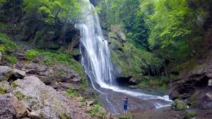

Cirque
d'Autoire


⟹ Le Petit Versailles du Lot ⟸
Connu depuis le IXe siècle environ, le village d'Autoire occupe un vallon dominé par les falaises calcaires du causse de Gramat, qui se referment en un cirque naturel spectaculaire d'où la rivière Autoire dévale en cascade. Le lieu était déjà fréquenté à l'aube de notre ère, avant qu'un habitat regroupé ne s'y développe peu à peu.

Au XIe siècle, le village et son église appartenaient à l'évêque de Cahors, avant que ses terres ne soient morcelées entre le seigneur de Turenne et le baron de Gramat. Durant la guerre de Cent Ans, aux XIVe et XVe siècles, la région fut le théâtre de nombreux affrontements et passa alternativement sous domination anglaise ou française : c'est de cette époque que date le « château des Anglais », fortification semi-troglodytique incrustée dans la falaise du cirque.
La paix retrouvée au XVIIe siècle marque le début d'un âge d'or : de belles demeures de style Renaissance sont édifiées par la noblesse et les notables de Saint-Céré, qui viennent y villégiaturer. Cette opulence passée vaut aujourd'hui à Autoire son surnom de « Petit Versailles du Lot ».
Classé parmi les Plus Beaux Villages de France, Autoire a su préserver ce patrimoine architectural remarquable, entre maisons à colombages, pigeonniers carrés et toitures de tuiles brunes très pentues.
Le cirque d'Autoire appartient à une catégorie de relief propre aux pays de plateaux calcaires, la « reculée » : une échancrure profonde entaillée dans le causse, qui s'achève par un étroit amphithéâtre de falaises d'où jaillit un cours d'eau, ici le ruisseau de l'Autoire, dont le village tire son nom.
Ce paysage vertical, où alternent parois abruptes, résurgences et végétation luxuriante, contraste fortement avec l'aridité du plateau qui s'étend juste au-dessus. Le fond de la reculée est également marqué par un phénomène géologique singulier : la distension des couches de terrain y a créé deux failles parallèles, celles de Padirac et de Siran, en lien avec le vaste réseau karstique souterrain du gouffre de Padirac tout proche.
Cette richesse géologique et paysagère vaut au site un classement en Espace Naturel Sensible, garant de la préservation de sa biodiversité remarquable, mousses, résurgences et végétation de fond de vallon comprises.
Baignade interdite : pour préserver l'équilibre fragile des milieux aquatiques du cirque, toute baignade y est strictement prohibée.
Sol glissant : le sentier menant à la cascade peut devenir dangereux après la pluie, ce qui appelle à la prudence et à des chaussures adaptées.
Variation saisonnière du débit : la cascade s'amenuise fortement en plein été, ce qui invite à privilégier le printemps pour l'observer dans toute sa puissance.
Fréquentation touristique : le sentier de 1,2 km reste très emprunté en saison, ce qui nécessite une vigilance accrue pour préserver la végétation environnante.
Le cirque et sa cascade se découvrent à pied, au terme d'une marche accessible mais qui demande de bonnes chaussures, notamment après la pluie.
Le parking à la sortie du village marque le point de départ du sentier de 1,2 km qui mène jusqu'au pied de la cascade.
Le sentier des hauteurs du cirque, plus raide, conduit aux vestiges du château des Anglais et offre un panorama spectaculaire sur la cascade et la vallée.
Le printemps, entre avril et mai, offre le débit le plus impressionnant grâce aux pluies saisonnières et à la fonte des neiges.
Le village d'Autoire lui-même, avec ses ruelles fleuries et ses demeures Renaissance, mérite une flânerie avant ou après la découverte du cirque.